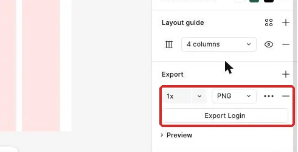
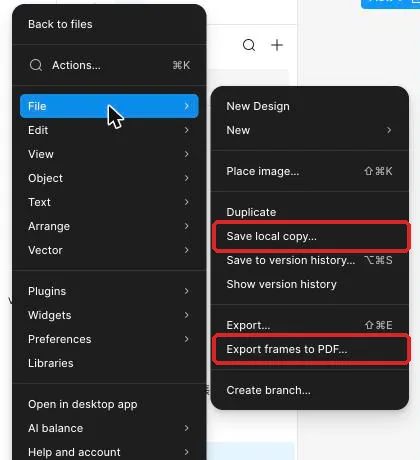

把設計整理成能重開、能量測的交付包
工作室的任務原型已完成修正，現在要讓接手工作的人從資料夾裡找到來源、讀懂規格、重開檔案並取得正確輸出。
從修正完成的原型接著整理
工作室的待處理清單已經走過單人任務測試。登入、長清單、詳情、取消、確認與完成結果都有紀錄，最嚴重的問題也已經修正。若只把幾張畫面圖片傳出去，接手工作的人仍然不知道原始尺寸、元件狀態、互動起點與哪些檔案可以繼續編輯。
這堂會接著使用修正後的 Figma 檔與測試紀錄，把散落的資訊整理成可重開、可量測、可核對的交付包。先從本堂起始材料確認來源與目標檔名，再用交付檢查表逐項重開來源、核對輸出與檢查資料夾。Photoshop 練習會使用本課提供的分層徽章，Figma 則輸出工作室流程的主要畫面。
交付的重點是每個檔案用途清楚
一份交付包要回答四個問題：原始設計放在哪裡、畫面規格怎麼讀、可直接使用的輸出有哪些、設計曾經怎麼測。來源用來修改，輸出用來直接使用，規格與測試則交代尺寸、狀態、起點與修正結果。
規格也不等於抄一串數字。每個數值都要對應物件、狀態與畫面。按鈕除了高度與圓角，還要寫來源元件、Hierarchy、State、Label 與填色。
本課從右側 Design 面板讀取 W、H、Padding、Gap、圓角與填色。選到文字層後，再讀字型、字級、行高、字重與文字顏色。量相鄰物件距離時，Windows 按住 Alt，Mac 按住 Option，再把游標指向相鄰物件。Starter 方案沒有 Dev Mode，本堂用 Design 面板完成規格。
影像來源也有相同原則。PSD 保存 Background、Card 與 Check 圖層；透明 PNG 提供完成後的點陣輸出。
| 類型 | 主要用途 | 重開後要確認 |
|---|---|---|
.fig | 保存 Figma 可編輯內容 | 圖層、元件、Prototype 起點與互動仍存在 |
| 畫面 PNG | 快速檢視與直接使用 | 尺寸、檔名、畫面內容與清單一致 |
| PSD | 保存 Photoshop 分層原稿 | 三個圖層可分別顯示與修改 |
| 透明 PNG | 網站或文件中的徽章素材 | 尺寸正確，四角呈現透明 |
| 規格表 | 說明尺寸、間距、文字、顏色與狀態 | 每個數值都能對回具體物件 |
| 測試 JSON | 保存任務測試與修正紀錄 | 表單可載入，內容能找到對應畫面 |
示範：量出一張任務卡與一個按鈕的規格
先看本堂規格表。這裡列的是示範要讀取的主線數值與交付名稱；實際匯出後仍要以目前設計檔顯示的內容為準。
| 物件或檔案 | 主線規格 | 交付用途 |
|---|---|---|
| 任務列外框 | W 354、Padding 16、Gap 8、高度依內容 | 說明清單列如何容納長文字 |
Row / Title（任務標題） | 字級 18、行高 28，字型、字重與填色照設計檔 | 說明主要文字樣式 |
| 主要按鈕 | 來源 Button、Hierarchy Primary、State Default、Label「確認完成」、H 48、圓角 8 | 說明元件狀態與可見文案 |
Overlay / Confirm（確認彈窗） | W 320、高度依實際內容 | 匯出 dialog-confirm.png |
| 主要畫面 | Login、List Long、Detail、List Done | 各自匯出 PNG |
| Figma 本機副本 | studio-tasks.fig | 放入 source/ |
| Photoshop 工作檔 | 512×512、Background／Card／Check 三層 | 另存 status-badge-working.psd |
| 透明徽章 | 512×512、PNG、透明背景 | 匯出 status-badge.png |
- 在 Figma 開啟修正後的工作室設計檔；畫布會顯示已完成測試的主要流程。
- 選取一個任務列外框；右側 Design 面板會顯示 W、H、Padding、Gap、圓角與填色。
- 把外框的寬度、內距、間距與目前高度填進規格表；規格列會對應到同一個任務列。
- 選取
Row / Title（任務標題）；右側會改成顯示文字設定。 - 記下字型、字級、行高、字重與填色；文字規格會包含完整的閱讀條件。
- 按住 Alt 或 Option，並把游標移到相鄰圖層；畫布上會顯示兩個物件之間的距離。
- 選取「確認完成」按鈕；右側會顯示來源與目前元件狀態。
- 把 Hierarchy、State、Label、高度、圓角與填色寫入同一列；按鈕規格會同時說明外觀與用途。
量測時要選到正確層級。任務列外框提供卡片寬高與內距，標題文字則提供字型與行高。規格表中的「間距 8」也要註明是任務列 Auto layout 的 Gap。
再量一個長標題的任務列。它的高度會隨文字改變，寬度、內距與 Gap 則沿用同一套規則；規格表要把固定規則與可變高度分開寫。
跟著做：匯出 Figma、保存 PSD，再重開核對
有了可讀的規格，接著建立可開啟的來源與輸出。每完成一個檔案就更新清單。
- 選取
Overlay / Confirm；右側 Design 面板會顯示目前彈窗的實際寬高。 - 在 Export 區塊點
+；畫面會新增一組匯出設定。 - 選 PNG 與 1x；匯出列會顯示格式與倍率。

- 按 Export；下載資料夾會出現這個 Frame 的圖檔。
- 將實際檔名改成
dialog-confirm.png；檔案名稱會與交付清單一致。 - 依序選取 Login、List Long、Detail 與 List Done 畫面匯出 PNG；每個主要畫面都會有一張可直接查看的輸出。
圖層名稱含 / 時，Figma 匯出的檔名可能會改變。請查看實際名稱，再依交付清單重新命名。
接著保存可編輯的 Figma 來源。從左上 Main menu 開啟 File，再選 Save local copy，將檔案存為 studio-tasks.fig。.fig 保存設計內容，但留言與版本紀錄不會一起放進本機副本，因此測試與決策要另外保存在 tests/ 與接手說明中。

存好後，回到 Figma 檔案首頁，點 Import，再選 Import from computer，開啟剛才的 .fig；也可以把檔案拖進首頁。匯入位置以畫面為準。開啟新檔後，檢查主要畫面、圖層與「完成一筆任務」流程起點。
接著處理 Photoshop 素材。Photoshop 需要授權電腦，請先依Photoshop 桌面版準備安排；目前沒有軟體時先完成 Figma 部分，取得電腦後再做 PSD 操作。素材包含分層 PSD、透明 PNG 參考與圖層說明。
- 在 Photoshop 選 File → Open 並開啟
status-badge.psd；文件會顯示正方形徽章。 - 查看 Layers 面板；Background、Card 與 Check 會以三個獨立圖層出現。
- 點 Background 旁的眼睛圖示；四角會顯示透明棋盤格。
- 點 Check 旁的眼睛圖示；白色勾號會單獨消失，而 Card 保持可見。
- 恢復 Check 可見與 Background 隱藏；畫面會呈現綠色卡片、白色勾號與透明四角。
- 選 File → Save As；若先跳出存到雲端或電腦的選擇視窗，點 Save on your computer。儲存對話框會讓你選擇檔名與格式。
- 將工作檔另存為
status-badge-working.psdFormat 選 Photoshop，確認 Layers 有勾；資料夾會出現新的分層來源。 - 關閉工作檔後用 File → Open 重開；三個圖層與可見狀態應完整保留。
- 隱藏 Background 後選 File → Export → Export As；匯出對話框會顯示格式、透明與尺寸設定。
- Format 選 PNG、勾選 Transparency，確認 Image Size 是 512×512，再按 Export；預覽會顯示透明四角。
- 匯出為
status-badge.png；exports/會得到網站可用的徽章。
如果 Export As 視窗打不開或出現錯誤（部分 2026 年版本有這個狀況），改用 File → Save a Copy，格式選 PNG；Background 隱藏時同樣保留透明。把 PNG 放在有顏色的背景上查看四角，再重開 PSD，確認三個圖層仍能分別切換。
看兩個交付資料夾，判斷哪一個接得下去
版本一的資料夾裡有 final.png、final2.png、最新版.png 與一張資料夾截圖。圖片可以打開，但檔名沒有說明畫面用途，也找不到可編輯來源、規格、流程起點或測試紀錄。
版本二分成 source/、exports/、spec/ 與 tests/。來源資料夾有 .fig 與分層 PSD，輸出資料夾有依畫面命名的 PNG，規格資料夾說明尺寸與元件狀態，測試資料夾則保存 JSON 與修正前後畫面。README 說明作品用途、開啟方式與流程起點。
哪一版比較適合交接？請從「可修改」「找得到」「讀得懂」「能重開」四個角度判斷。
看判斷理由
版本二較好。來源與輸出各自有明確用途，檔名能對回畫面，規格說明數值屬於哪個物件，測試紀錄與 README 則讓接手工作的人知道從哪裡開始並能重新開啟檔案。
再比較兩份按鈕規格。版本一只寫「高度 48、圓角 8」。版本二寫「來源 Button，Hierarchy Primary，State Default，Label 確認完成，高度 48、圓角 8，並附目前填色」。哪一份比較能讓接手工作的人找到正確按鈕？
看判斷理由
版本二較完整。它除了外觀數值，也說明元件來源、狀態與畫面文案，因此可以在元件集中找到同一個 Variant，並把規格用在正確的操作情境。
卡住時，回到檔案用途與實際名稱
| 看到的現象 | 通常的原因 | 怎麼修 |
|---|---|---|
| Design 面板數值與預期不同 | 選到文字層而非任務列外框，或選到另一個狀態 | 先在 Layers 確認物件層級，再重新讀 W、H、Padding 與 Gap |
| PNG 檔名和清單對不上 | 圖層名含 /，匯出時轉成其他名稱 | 查看匯出後的實際檔名，再依清單重新命名 |
.fig 匯入後找不到原位置 | 匯入檔案出現在首頁的其他區域 | 以畫面顯示的位置開啟，並核對主要 Frame 與流程起點 |
| PSD 重開後只剩一層 | 另存時選錯格式或圖層已合併 | 重新開原始 PSD，使用 Save As 或 Save a Copy 保存 Photoshop 格式與 Layers |
| PNG 四角出現白底 | Background 仍顯示，或透明選項未開 | 隱藏 Background，再從 Export As 開啟透明背景並重新匯出 |
| 交付清單有檔名但資料夾找不到 | 清單沿用範例，沒有依實際輸出更新 | 逐項對照資料夾，把清單改成目前存在的名稱與路徑 |
換你做：報名確認 App
活動主辦單位要把報名確認 App 交給下一位維護者。對方要能重開來源、理解元件狀態、取得畫面 PNG，並讀到測試與評分結果。請建立一份交付資料夾。
要達成的條件：
- 建立來源、輸出、規格與測試四類資料夾，名稱由你決定，但 README 要說清楚每一類用途。
- 在來源中放入可重開的
.fig，並寫明報名 App 的流程起點。 - 在輸出中放入清單、張家豪詳情、確認彈窗與已確認結果的 PNG。
- 在規格中記錄一張報名卡片、狀態標籤與「確認報名」按鈕的尺寸、間距、文字、顏色與狀態。
- 在測試中放入上一堂下載的任務測試 JSON、整合作品評分結果與修正前後畫面。
- README 說明作品用途、如何重開來源、如何預覽流程、每張輸出的用途與目前設計取捨。
- 逐項核對交付清單中的檔名，讓每個名稱都能在資料夾中找到。
合格的結果要通過以下自我檢查：
- 關閉原本開著的設計檔後，只依 README 找到並匯入報名 App 的
.fig。 - 匯入後能找到 360×800 的清單、詳情、確認彈窗與完成結果。
- 規格表的數值能回到正確圖層讀到，狀態標籤也能找到對應 Variant。
- 張家豪詳情 PNG 顯示完整長備註，檔名與交付清單一致。
- 任務測試 JSON 能載入原表單，整合作品分數與修正紀錄都找得到。
- README 中的每一條路徑都能從交付資料夾實際走到目標檔案。
真的卡住再看：提示
先從四種用途分類現有檔案，再逐項寫 README；每寫一個檔名就回資料夾實際找一次，最後關閉原分頁，只靠 README 重開。
讓交付包成為下一段工作的起點
工作室原型現在有可量測的規格、可重開的來源、依用途命名的 PNG 與測試紀錄。接手工作的人可以從 README 找到起點與檔案用途。
下一堂會使用這些畫面與透明徽章，把設計放進網站專案。今天整理的檔名、主色與狀態文字會成為修改來源；網站完成後，公開網址與版本紀錄會再放進交付包。
完成條件：
- 規格表能從 Design 面板對回任務列、文字與按鈕的實際設定。
- Figma 本機副本可重新匯入，主要 Frame 與流程起點仍存在。
- Photoshop 工作檔保留三個圖層，透明 PNG 尺寸與檔名正確。
- 交付資料夾包含來源、輸出、規格、測試與可照著操作的 README。
想一想：為什麼透明 PNG 已經能放進網站，仍要保留分層 PSD？
看參考答案
透明 PNG 適合直接顯示，但圖層已經合成；分層 PSD 讓後續工作可以單獨調整背景、卡片或勾號。兩者分別服務使用與修改，因此應在交付清單中標明不同用途。
本堂查證來源
來源查證：2026-11-02。